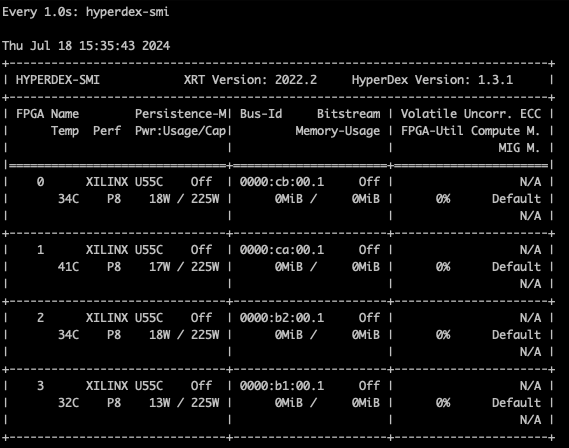
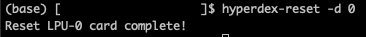

HyperAccel LPU™ Troubleshooting
Here are some methods that was shared with previous error cases.
Based on the experiences of our previous PoC customers, most of the problems occur when pressing crtl + c while running the LPU™. Please do not do this!
SMI
You can check the status of the device that is running. This code shows online devices and each memory uses.
$ watch -n 1 hyperdex-smi

This refreshes the display every second. To make the refresh rate faster, decrease 1 to a lower number(e.g. 0.5). The number on the most left side is the id of the LPU™.
Reset
Instead of pressing crtl + c, please reset the device.
First, check the device id with the hyperdex-smi.
Next reset the device with the following code.
$ hyperdex-reset -d {LPU id}
After successfully resetting the device, this will be displayed.
